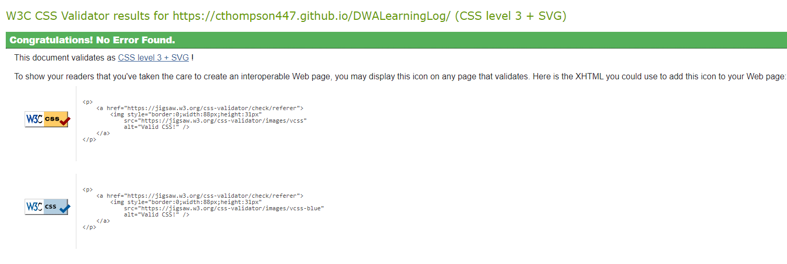

- Practical 1 involved the setup of a learning log website. The purpose of this is to show progress of each
practical along with relevant learning outcomes.
- I started by setting up a basic page with hyperlinks to each practical and learning outcomes. Following from
this, I spent some time thinking about how to implement
css in a clean easy-to-use way for accessing each week's practical and outcomes. I decided that a tile
system with hyperlinks would be nice for this. Each practical will have a
small logo along with a link to each practical and learning outcomes page.
- Upon implementing this design I then ran my site through the
css validator.
In order to do this I have hosted my site on GitHub Pages which then allowed me to link it into the
validator. See below:

The validator passed
on first run without any amendments required which was great!
- In this practical I learned a lot about css, I made HTML containers and then assigned css classes to them
with appropriate styling to arrange them nicely. There was a lot of trial and error to get the appearance
how I liked it, this familiarised me with css properties like padding, margin and display as each of these
was required to get the layout right.
- To develop this, I made use of JetBrains
Webstorm to
develop this. My reason for choosing WebStorm was familiarity with Jetbrains IDEs, I use IntelliJ Idea for
Java and TypeScript development in work extensively.